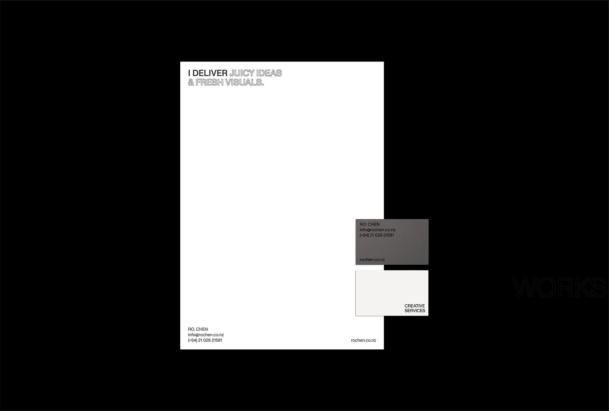
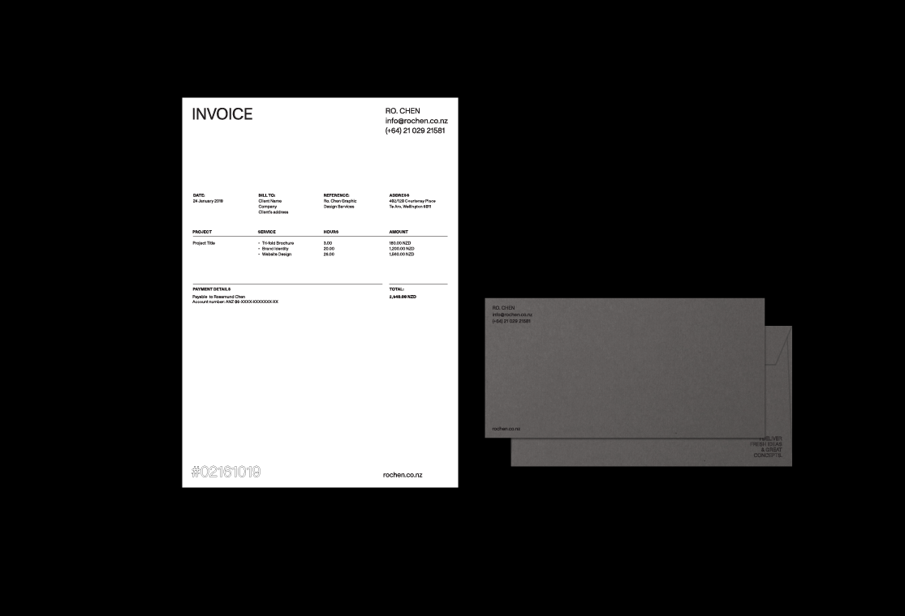

2019
Personal Identity
My personal visual identity is a reflection of my nature and design ideology. I am confident yet humble, quiet but certainly not invisible, and I tend to go straight
to the point. In design, I believe in a clear approach to the subject matter and try to have as little presence as possible in my works.
As such, I took on the 'no-frills' direction where I drew inspirations from no-frills supermarket products. The message is always clear and straightforward, you get what you see, no bullsh*t. This clean-cute and bold aesthetic can be seen spreaded across the branding collaterals and portfolio package.